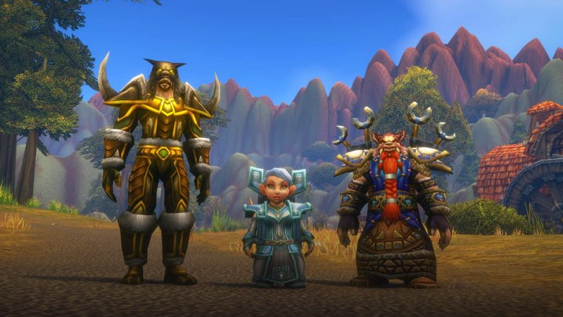

News › Classes et races les plus jouées
Qui joue quoi ? Les classes et races les plus jouées de WoW Forever
25 novembre 2026
Trois semaines après la sortie, les recensements des sites anglais donnent une bonne idée de ce que joue la communauté.

Les classes
- D'après Raider.IO, sur les royaumes JcJ, le chasseur est la classe la plus jouée (13,7 %), devant le paladin (12,8 %) et le druide (11,5 %).
- Le démoniste ferme la marche (9,4 %).
- Chez les chasseurs, environ 3 sur 4 ont choisi la spécialisation Maîtrise des bêtes. Et surprise : chez les paladins, la spé la plus choisie est Protection, pas Vindicte.
Les races et les factions
- Le mort-vivant est la race la plus jouée (environ 20 %), juste devant l'humain (18 %) et l'elfe de la nuit (11 %).
- La nouveauté qui tire le mort-vivant vers le haut : le paladin mort-vivant, le duo race et classe le plus courant du jeu.
- Côté factions, c'est presque l'équilibre : environ 51 % de Horde et 49 % d'Alliance sur les royaumes JcJ.
- Les Éolides restent discrets : environ 6 à 7 % des personnages de l'Alliance.
Ces chiffres viennent de recensements faits par des sites de fans, pas de Blizzard. Ils comptent les personnages vus en jeu et peuvent varier d'un site à l'autre. Pour choisir ta classe, regarde plutôt nos tier lists et notre comparatif des races.
Sources : Raider.IO (2,66 millions de personnages sur les royaumes JcJ, 24 novembre 2026) et Icy Veins (spécialisations), 24 novembre 2026.